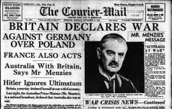

YashWardhan Blogs
My blog will give frequent updates of the recent bestselling novels and tell the viewers about their plot, price and other necessary information. News related to the academic tycoon coaching 'Resonance' are updated informing about the various Workshops, Scholarship Exams and Tech examinations held here Recent activities of the the thrilling National Cadet Corps (NCC) Bhopal are posted on a monthly basis.
Different Perceptions on the Beginning of WWII

The terrible effects of the First World War had left the European countries exhausted. Central Europe was fragmented after the treaty of Versailles, their pride shattered. The German soldiers and officers were frustrated. In their views, the mutinies and revolts within Germany in 1918 which caused the Kaiser to abdicate, led by Jewish-Bolsheviks, was their defeat’s main cause. However, the main cause behind the unrest was war-weariness, hunger and poverty. The hyperinflation in 1922-23 caused national and personal shame to all of the German population. German nationalists dreamt of a time when the humiliation of the treaty of Versailles could be reversed. The Wall Street Crash of 1929 hit Germany the hardest; the value of the German Mark fell dramatically.
Recent memories of the Russian revolution and the civil wars in Hungary, Finland and the Baltic states greatly increased the process of political polarization. In this new collectivist age, violent solutions appeared supremely heroic to all.
There are many perceptions on the beginning of the Second World War, its cause, when it started and by whom.
Though the most common perception is that World War 2 began when Nazi Germany invaded Poland on 1st September 1939.

however, History is not that tidy; some insist that the war which began with the invasion of Poland in 1939 was the start of Hitler’s drive for Lebensraum (Living space) in the east. Some insist that the war began with the Spanish Civil War, or with the beginning of the Sino-Japanese war (1937 – 1945) or when Japan invaded the Manchuria region of China in 1931. Some people even believe that the second world war just an extension of the First World War thus making it a 40 years’ war(1914 – 1945). It is therefore important to look back at some of the circumstances which led to this. The newspaper on 4 september 1939
A picture of the Sino-Japanese war, 1937